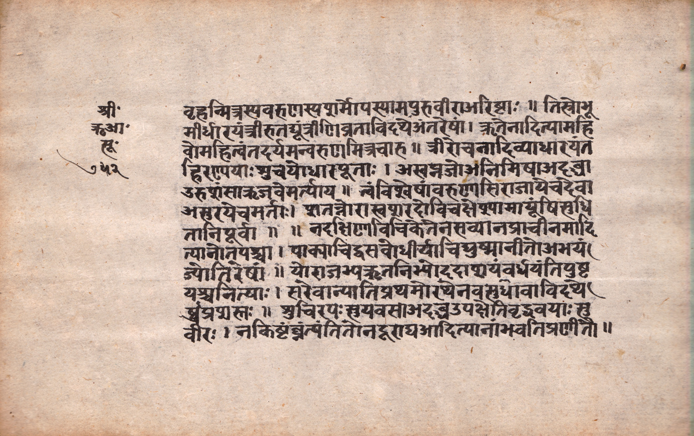
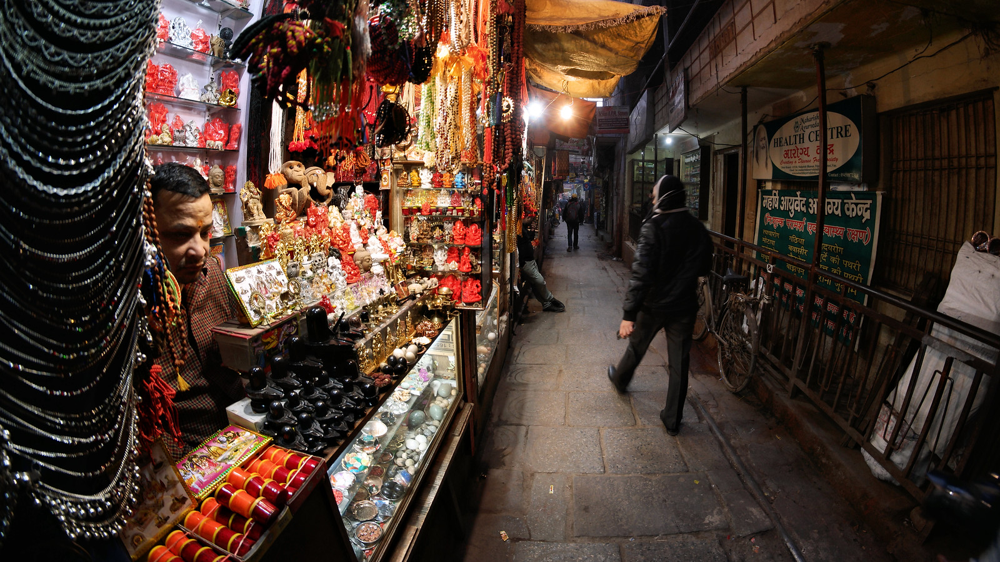

Katha Pustika
Kāśī: The Luminous City of Liberation
A Welcome to the Eternal City
Welcome, pilgrim, to Kāśī (Varanasi), the oldest living city in the world and the sacred abode of Lord Śiva. You are not merely visiting a place; you are entering a *mahā-tīrtha*, a great crossing-place where the veil between the earthly and the divine is at its thinnest. This city, resting upon the trident of Śiva, is never forsaken, even during the cosmic dissolution. It is known as *Avimukta Kṣetra*—the place from which Śiva never departs.
This *Katha Pustika* is your companion on this sacred journey. It is designed to connect you with the profound history, spiritual vibrations, and sacred traditions of Kāśī, as described in the Purāṇas and glorified by the saints. May your yātrā be transformative.
1. Sthālapurāṇa: The Origin of Kāśī
(From the Skanda Purāṇa, Kāśī Khaṇḍa)
In the beginning, when all was unmanifest, the formless Lord Śiva and Goddess Pārvatī desired a place on earth for their divine play (*līlā*) and for the liberation of souls. Lord Śiva manifested this city from his own effulgence. It was not built upon the earth but was established in the sky, resting upon the prongs of his divine trident (*triśūla*). For this reason, Kāśī is considered impervious to earthly calamities and cosmic cycles.
It was named Kāśī, "the Luminous," because it is perpetually illuminated by the light of Śiva's consciousness. He declared that this city would be the ultimate place of liberation (*mokṣa*). He made a divine promise that any being—be it a human, animal, or insect—who leaves their body within the sacred boundaries of the *Pañcakrośī* (the five-kos pilgrimage circuit), would have the *tāraka-mantra* (the sacred mantra that ferries one across the ocean of existence) whispered into their ear by Śiva himself, thus ensuring their soul's immediate release from the cycle of birth and death. This is the supreme glory of Kāśī, the city that grants liberation to all.
2. Śloka Saṅgraha: The Greatness of the Tīrtha
This key verse from the *Kāśī Khaṇḍa* encapsulates the spiritual merit of the city.
काशीक्षेत्रं परं गुह्यं देवानामपि दुर्गमम्।
तत्र देवाः सगन्धर्वास्तिष्ठन्ति सततं प्रिये॥kāśīkṣetraṃ paraṃ guhyaṃ devānāmapi durgamam |
tatra devāḥ sagandharvāstiṣṭhanti satataṃ priye ||English Translation: "The region of Kāśī is the supreme secret, difficult to attain even for the gods. O beloved (Pārvatī), the gods and celestial beings always reside there."
3. Bhakta Caritra: Stories of the Saints
Gosvāmī Tulsīdās and the Vision of Hanumān
It was in Kāśī, at the Assi Ghat, that the great poet-saint Tulsīdās composed much of the sacred epic, the *Rāmcaritmānas*. As per the *Bhaktamāl*, Tulsīdās would regularly offer water from his vessel to a particular tree. One day, a pleased spirit (*preta*) residing in the tree appeared and offered him a boon. Tulsīdās asked only to have the *darśana* of Lord Rāma. The spirit replied, "That is beyond my power, but I can guide you. An old, leprosy-afflicted Brahmin is the first to arrive and the last to leave the daily Rāma-kathā recital. He is none other than Lord Hanumān in disguise. Clasp his feet, and he will grant your wish."
Tulsīdās did as instructed. Pleased by his devotion, Hanumān blessed him and guided him to have the divine vision of Lord Rāma and Lakṣmaṇa at Chitrakoot. The Sankat Mochan Hanuman Temple in Kāśī stands today at the very spot where Tulsīdās is believed to have had this powerful vision of Lord Hanumān.
Kabīr and the Waters of Gaṅgā
The mystic poet and saint Kabīr spent his life in Kāśī, challenging religious dogma. A famous story tells of a time when local priests challenged him, claiming that if he were a true man of God, the Goddess Gaṅgā herself would accept an offering from him. Kabīr, with simple faith, approached the river with a small offering of milk. As he extended his hand, a divine arm emerged from the waters of the Gaṅgā and accepted his humble offering in full view of the astonished crowd, proving that sincere devotion is more valuable than wealth or ritual.
4. A Pilgrim's Guide to Kashi's Temples
Beyond the grandeur of the Viśvanātha Temple, the narrow lanes of Kāśī hide countless temples, each with a unique story and potent spiritual vibration as described in the Kāśī Khaṇḍa.
Annapūrṇā Mandir
Adjacent to the Viśvanātha temple is the golden shrine of Goddess Annapūrṇā, the provider of food. Legend states that when Lord Śiva was living as a mendicant, Goddess Pārvatī took the form of Annapūrṇā to feed him and the entire world, establishing the principle that Kāśī would never lack for food. It is a tradition for pilgrims to seek her blessings to ensure they are never without nourishment, both physical and spiritual.
Kāla Bhairava Mandir
Lord Kāla Bhairava is the fierce form of Śiva who is the *Kotwāl* (gatekeeper and magistrate) of Kāśī. When Śiva beheaded the fifth head of an arrogant Brahmā, the head stuck to his hand. He wandered the three worlds for atonement, but the sin of *Brahmahatyā* only left him when he entered Kāśī. Śiva then appointed Bhairava as the city's eternal guardian. It is believed that one cannot truly complete a pilgrimage to Kāśī or even leave the city without his permission.
Durgā Mandir (Durga Kund)
This distinctive red-ochre temple is dedicated to Goddess Durgā. The *Kāśī Khaṇḍa* narrates that the Goddess rested here after slaying the demons Śumbha and Niśumbha. The deity here is believed to be *svayambhū* (self-manifested). The adjacent pond, Durga Kund, was once connected to the Gaṅgā river. The Goddess here is revered as a powerful protector of the city and its inhabitants from all external threats.
Viśālākṣī Mandir
Located near the Maṇikarṇikā Ghāṭ, this is one of the most important Śakti Pīṭhas. It is the sacred spot where the *karṇa-kuṇḍala* (earring) of Goddess Satī fell. The Goddess is worshipped here as Viśālākṣī, "the wide-eyed one," who sees and knows everything. A visit here is considered essential for completing the Śakti Pīṭha pilgrimage circuit.
Tilabhāṇḍeśvara Mandir
This ancient temple houses a *svayambhū* Śivaliṅga that is believed to grow by the size of a sesame seed (*til*) every single day. The liṅga is said to have emerged from the ground thousands of years ago and continues its slow, divine growth. The temple provides a tangible connection to the living, ever-present divinity of Kāśī.
Mṛtyuñjaya Mahādeva Mandir
Dedicated to Lord Śiva as the "Conqueror of Death," this temple is a place of powerful healing. The *Kāśī Khaṇḍa* tells the story of the sage Mārkaṇḍeya, who was destined to die at a young age. He embraced the Śivaliṅga here, and when Yama (the god of death) came for him, Lord Śiva emerged from the liṅga and defeated death itself. An ancient well (*kūpa*) within the temple complex is believed to have medicinal properties.
Bindu Mādhava Mandir
Located at the Pañcagaṅgā Ghāṭ, this is one of the most important Viṣṇu temples in Kāśī. The *Kāśī Khaṇḍa* states that Lord Viṣṇu appeared here before a sage named Agni Bindu, who performed severe austerities. Viṣṇu promised to reside here permanently as Bindu Mādhava. Śrī Caitanya Mahāprabhu himself had ecstatic *darśana* here, making it a vital site for Vaiṣṇavas.
Sankat Mochan Hanumān Mandir
While famous for its connection to Tulsīdās, the power of Hanumān in Kāśī is ancient. As the eternal devotee of Lord Rāma, his presence ensures the protection of all pilgrims. He is known as *Sankat Mochan*, the remover of all troubles and difficulties. Devotees flock here to seek his blessings for courage and strength in overcoming life's obstacles.
Kardameśvara Mahādeva Mandir
Located in the Kandwa area, this is one of the few temples in Kāśī that survived the waves of destruction and retains its original 12th-century structure. The *Kāśī Khaṇḍa* mentions that the Śivaliṅga here was consecrated by the great sage Kardama, one of the progenitors of mankind. It is the first major halt on the sacred Pañcakrośī Yātrā, and it is believed that Lord Rāma himself worshipped here to atone for the sin of killing Rāvaṇa.
Kṛttivāseśvara Mandir
The *Kāśī Khaṇḍa* narrates the tale of the powerful demon Gajāsura. When Lord Śiva defeated him, the demon prayed that his hide (*kṛtti*) be worn by Śiva as a garment. Pleased, Śiva not only accepted his hide but also declared that Gajāsura's sanctified body would become a liṅga known as Kṛttivāseśvara, the "Lord who wears a hide," which would grant liberation to all who worship it.
Oṃkāreśvara Mandir
This temple represents one of the three sacred segments (*khaṇḍas*) of Kāśī. The *Kāśī Khaṇḍa* explains that Lord Brahmā performed great penance here. Lord Śiva, pleased, manifested from the sacred sound "Oṃ" and established himself as the Oṃkāreśvara Liṅga, declaring that worship here would bestow the benefits of mastering all the Vedas.
Kedāreśvara Mandir
This temple, located at the beautiful Kedār Ghāṭ, is the center of the southern segment (*khaṇḍa*) of Kāśī. The *Kāśī Khaṇḍa* states that a devout king named Vasiṣṭha brought a replica of the original Kedārnātha Jyotirliṅga from the Himalayas to Kāśī. It is believed that having *darśana* here grants the same immense merit as undertaking the arduous journey to the Himalayan Kedārnātha.
Trilocana Mandir
Located at the Trilocana Ghāṭ, this temple is dedicated to Śiva as the "Three-Eyed Lord." The *Kāśī Khaṇḍa* describes a sacred pond here where three streams of milk, representing the three sacred rivers, once flowed. A bath in this pond, followed by worship of the Trilocana Liṅga, is said to grant divine vision and destroy all sins.
Ḍhuṇḍhirāja Vināyaka Mandir
Of the 56 Vināyakas (forms of Gaṇeśa) who guard Kāśī, Ḍhuṇḍhirāja is the most important. The *Kāśī Khaṇḍa* narrates that when King Divodāsa ruled Kāśī, the gods could not enter. Gaṇeśa, in the form of an old astrologer, came to "search" (*ḍhuṇḍh*) for a way to unseat the king. After succeeding, he was given the name Ḍhuṇḍhirāja and the boon that no pilgrimage to Kāśī would be complete without first worshipping him.
Ādi Keśava Mandir
Situated at the confluence of the Varaṇā and Gaṅgā rivers, this is where Lord Viṣṇu first placed his feet when he came to Kāśī as Śiva's emissary. The *Kāśī Khaṇḍa* glorifies this spot as the *Pādodaka Tīrtha* (Tirtha of the foot-wash water). Viṣṇu established himself here as Ādi Keśava, the "Original Viṣṇu," marking the beginning of his divine presence in the city.
The Ratneśvara Mahādeva Mandir (The Leaning Temple)
Located near Maṇikarṇikā Ghāṭ, this temple is famous for its dramatic nine-degree lean. Legend says it was built by a servant in honor of his mother, Ratna Bai. After its completion, he boasted that he had repaid his debt to his mother. Because the debt to a mother can never be repaid, the temple itself leaned over, signifying the impossibility of such a feat. It remains submerged in the Gaṅgā for most of the year, a powerful symbol of humility.
5. Yātrā Vidhi: A Guide to Sacred Rituals
I. Gaṅgā Snāna (Ritual Bath in the Ganges)
The bath in the Gaṅgā is the first and most important act of a pilgrim. It is a spiritual purification.
- Saṅkalpa (Intention): Before entering the water, make a silent, heartfelt intention (*saṅkalpa*). Pray to Mother Gaṅgā to wash away your sins.
- The Dips: Enter the holy river with reverence. It is traditional to take at least three full dips, chanting "Har Har Gaṅge."
- Tarpaṇa (Water Offering): While standing in the river, offer water from your cupped hands to the Sun God (Sūrya) and to your ancestors.
- Post-Bath: Let the sacred water air-dry as much as possible, allowing its purifying qualities to be absorbed. This is an act of austerity (*tapas*).
II. Viśvanātha Darśana (Viewing the Deity)
The *darśana* of Lord Viśvanātha, the Lord of the Universe, is the culmination of the Kāśī yātrā.
- Preparation: After your Gaṅgā Snāna, wear fresh, clean clothes. It is traditional to carry a small vessel (*loṭā*) of Gaṅgā water as an offering.
- Approach with Humility: As you approach the temple, chant the mantra **"Oṃ Namaḥ Śivāya."** Focus your mind on Lord Śiva.
- The Offering: Inside the sanctum sanctorum (*garbhagṛha*), you will have the opportunity to offer your Gaṅgā water upon the sacred Jyotirliṅga. This act is called *abhiṣeka*.
- The Darśana: *Darśana* is a spiritual exchange. Gaze upon the Jyotirliṅga and feel the divine presence. Absorb the powerful vibrations of the sanctum.
III. At the Maṇikarṇikā Ghāṭ
This is the great cremation ground (*mahāśmaśāna*) of Kāśī. It is a place of profound spiritual significance, not a tourist site.
- Reverence and Reflection: Approach this ghat with utmost reverence. It is a powerful reminder of the impermanence of the physical body and the eternal nature of the soul (*ātman*).
- Observe with Detachment: You will see funeral pyres burning continuously. Observe this with detachment (*vairāgya*), reflecting on the ultimate reality of death.
- The Promise of Mokṣa: Remember the Sthalapurāṇa. This is the place where Lord Śiva fulfills his promise of granting liberation. It is a place for deep, inner contemplation.